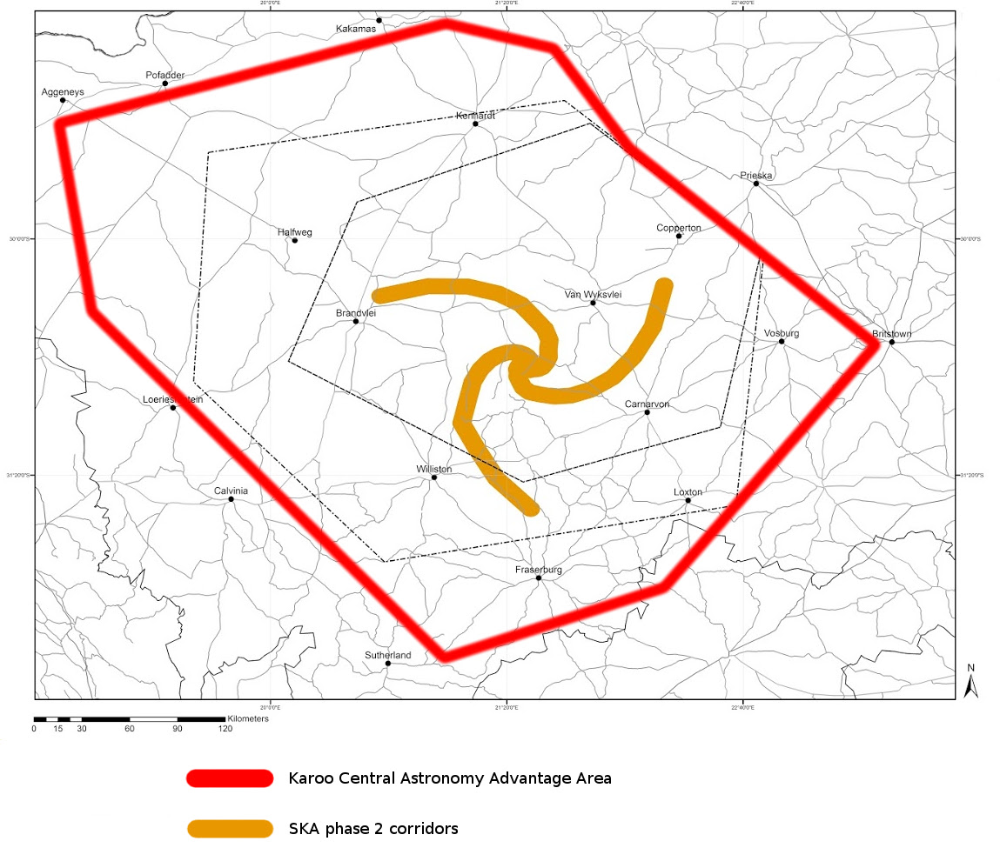
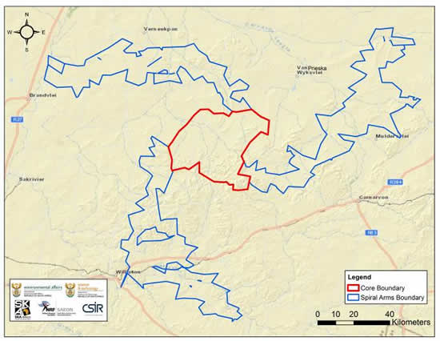

This website serves to inform everybody about events as they are experienced on the ground, surrounding SKA, the Square Kilometer Array radio astronomy project in South Africa.
In the main article South Africa's chosen site will be examined, many immediate and future impacts considered and financial challenges facing the project will be highlighted.
Affected and interested parties are invited to share comments and stories on our Facebook page or sign our online petition. Please feel free to ask questions and become involved.
A big thank you to all the wonderful people of the Karoo, and our friends from further afield, who have all worked so hard to help create this website. The support and love you have shown will save the Karoo.


An SKA expert explained the regulations and resulting restrictions placed on the Astronomically Advantaged Area ( AAA) within which SKA lies as follows: "You may not enter or reside in this region without permission from the management authority. You may not do most things compatible with civilised life - such as erect lights, fly an airplane, drive a truck, construct a road, build a house, or broadcast a radio signal - in this region without permission. Even such farm-like activities as combine harvesting and arc-welding will be severely restricted or prohibited."
Later the same expert added more restrictions on generating power (even wind energy), spark plugs (petrol driven vehicles included), electric fencing, digital mobile equipment like hand held devices and other electric equipment. The are also restrictions on traffic and access to some roads is controlled.
You can download the pdf version of our article by liking the button below.
Download ArticleFeel free to email us to provide some feedback on our research, help us with our cause, or to just say hello!